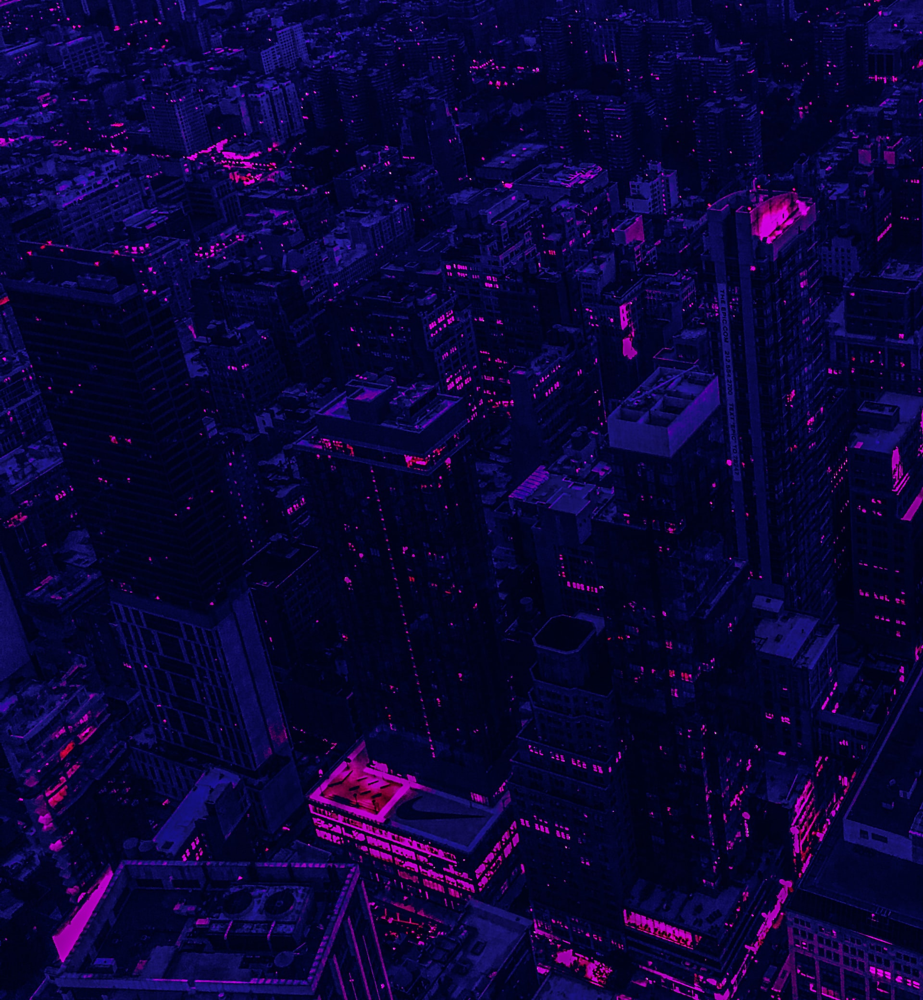
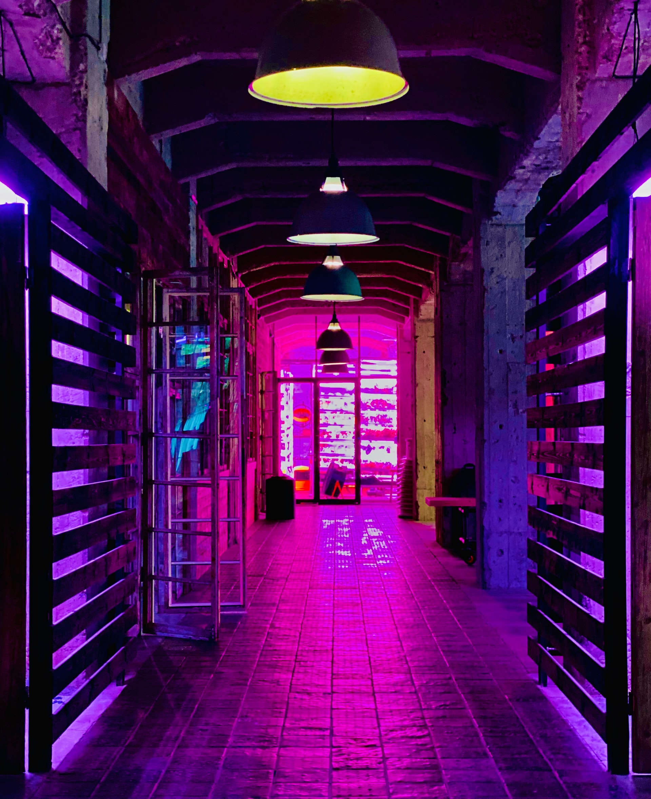
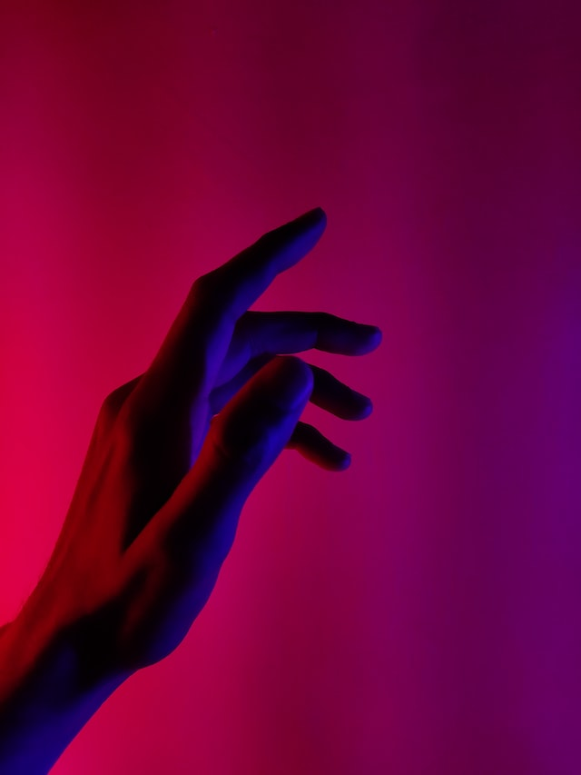

a few facts about me are that i am 28 years old, i have three cats,
i like spaghet and also i am allergic to cats.
hobbies include: repeating songs on spotify ad nauseam, eating
spaghet and learning code.



I actually didn't know what to expect when applying for nmd. It just
seemed like a cool and creative profession. I'm happy that i did
though; because i'm having a lot of fun learning.